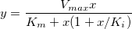

SubstrateInhib-FitFunc

高濃度の基質阻害モデル
数：3
パラメータの名前:Vmax, Km, Ki
意味:Vmax = 最大酵素活性, Km = 酵素活性のMichaelis-Menten定数, Ki =解離定数
下側境界:Km > 0.0, Ki > 0.0
上側境界:なし
nlf_SubstrateInhib(x,Vmax,Km,Ki)
FITFUNC\SubstrateInhib.FDF
Enzyme Kinetics